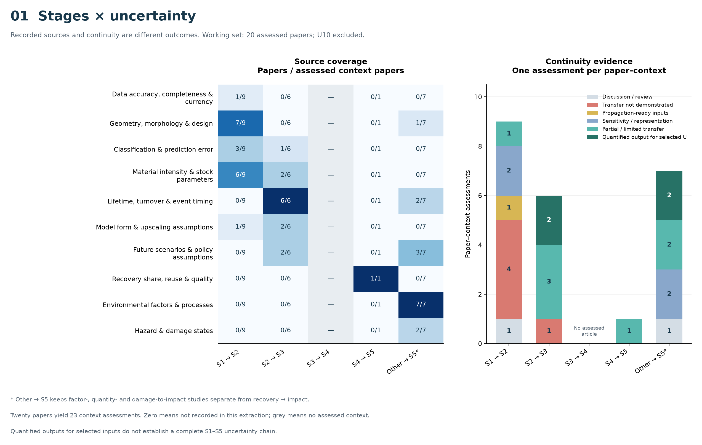
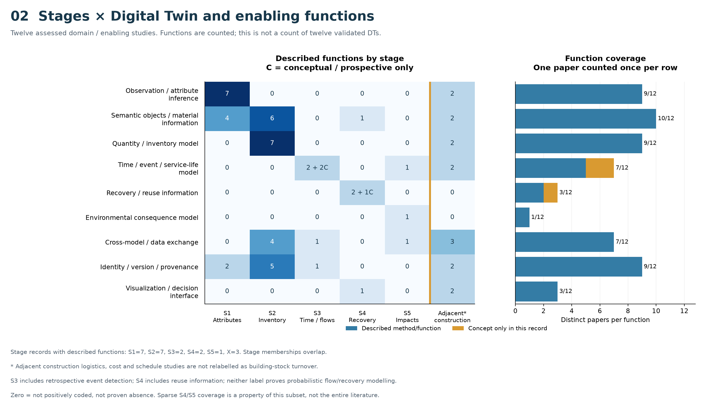
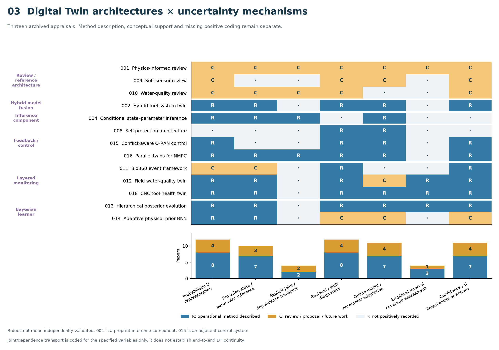
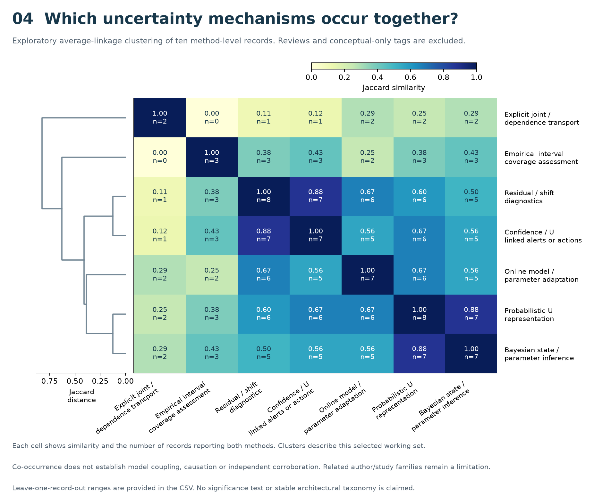

Four data-result figures. Conceptual diagrams are stored separately. Semantic coding of archived working-set extractions; no new full-text review or inferential significance claim.

PDF · SVG · PNG


